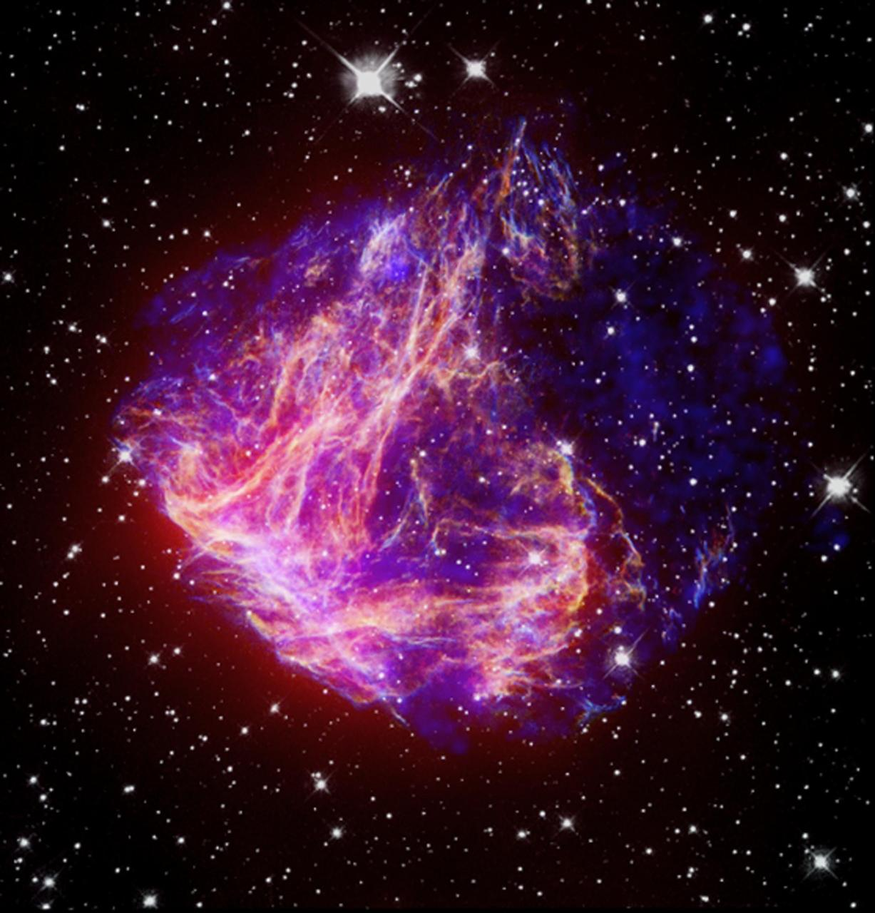
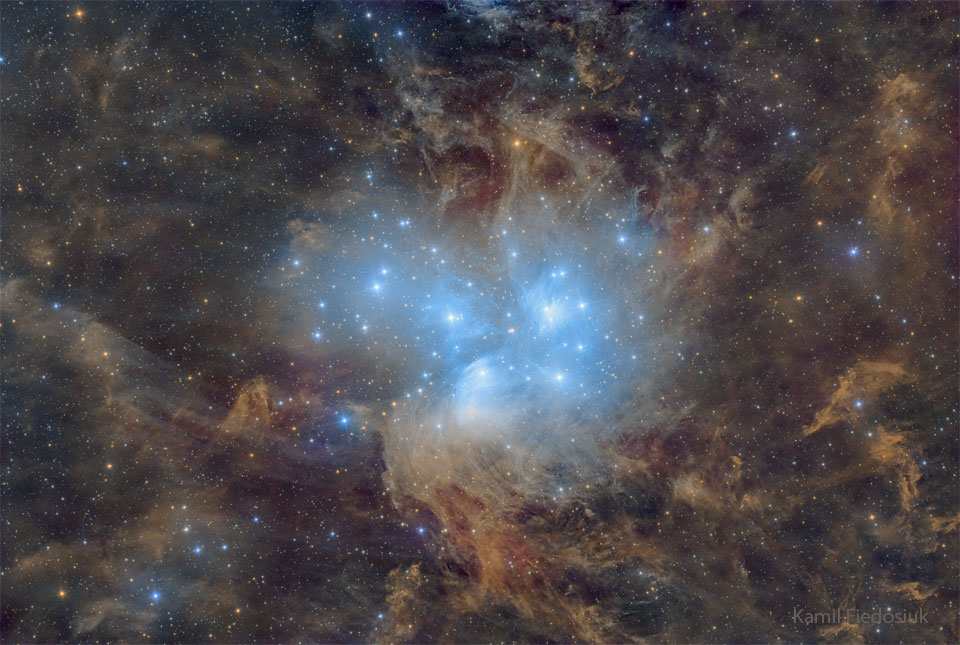

Galaxies
Mysterious Things that exist in the universe
Types of galaxies (Overall)
There are ~135+ types of recognizing classifications methods
- Elliptical Galaxies (E): E0, E1, E2-E7
- Dwarf Ellipticals (dE), Dwarf Spheroidals (dSph), Ultra-Compact Dwarf (UCDs)
- Brightest Cluster Galaxies (BCGs), Shell Galaxies
- Lenticular Galaxies (SO): SO, SBO, SO/a
- Spiral Galaxies (S): Sa, Sab, Sb, Sbc, Sc, Scd, Sm
- Barred Spirals (SB): SBO, SBa, SBab, SBb, SBbc, SBc, SBcd, SBd, SBm
- Intermediate Spirals (SAB): SABa, SABb, SABc
- Irregular Galaxies (Irr): Irr I, Irr II, dIrr, BCDs
- Peculiar Galaxies: PRGs, Hoag-type Galaxies, Pseudo-ring Galaxies, Shell Galaxies, Plume Galaxies
- Active Galaxies (AGN): Seyfert Galaxies, Quasars (QSOs), Blazars, Radio Galaxies, BL Lacertae objects
- Ellipticals: M87, M59, M32
- Spirals: Andromeda, Whirlpool, Triangulum
- Barred Spirals: Milky way, NGC 1300, NGC 1365
- Lenticulars: Sombrero, NGC 5866, Centaurus A
- Irregulars: Large Magellanic Cloud (LMC), NGC 1427A, IC 10
- Active Galaxies (AGN): M77, 3C 273, BL Lac
- Interacting: Antennae Galaxies, Mice Galaxies, Cartwheel Galaxies
- Peculiars: Hoag's Object, NGC 2685, Malin 1
Examples

The Large Magellanic Cloud

The Small Magellanic Cloud (SMC)

M96
Types of Objects in outer space
There are 10 types of objects in outer space
- I. Stars: O (Blue) , B, A, F, G, F, G, K, M (Red)
- Protostars, Giants, Hypergiants, White Dwarfs, Neutron Stars, Black holes, Magnetars
- Pulsars, Cepheids, RR Lyrae, Cataclysmic, R Coronae Borealis
- II. Planets, Dwarf planets: Terrestrial, Gas Giants, Ice Giants
- Asteroids, Comets, Meteoroids, Interplanetary Dust, Transneptunian Objects
- III. Nebulae: Emission Nebulae, Reflection, Dark Nebulae, Molecular Clouds
- Planetary Nebulas, Round/ Spherical, Irregular
- Supernova Remnants, Shell-type, Plerions, Superbubbles, Polycyclic Aromatic Hydrocarbons (PAHs)
- IV. Galaxy & Large structures: Galaxy components, Galactic Bulge, Galactic Disk, Spiral Arms, Galactic Bar, Galactic Halo, Galactic Corona
- Star clusters: Open clusters, Globulars clusters
- Galaxy Groups: Galaxy Groups, Galaxy Clusters, Superclusters, Filaments & Voids, Great Walls
- V. Active & Exotic Objects: Seyfert, Quasars, Blazars, Radio Galaxies, LINERs (Low-ionization nuclear regions)
- Gamma Ray Bursts, Gamma-ray Pulsars, Gamma-ray Binaries, TeV Blazars
- VI. Large-scale & Cosmological: Cosmic Mircowave Background(CMB), Baryon Acoustic Oscillations (BAO)
- Dark Matter Halos, Cosmic-Voids, Lyman-alpha Forests, Warm-Hot Intergalactic Medium
- Gravitational Lenses, Einstein Crosses, Gravitational Waves, Lyman Limit Systems
- Ultra-Luminous X-ray Sources (ULXs), Superluminous Supernovae
- VIII. By Wavelength Regime: Pulsars, Megamasers, Radio Haloes
- Ultra-Luminous IR Galaxies, X-ray Binaries, Pulsar Wind Nebulae, Supernova Remnants
- IX. By Origin/ Formation
- First Galaxies (z > 6), Population III stars, Thorne-Żytkow Objects, Black Hole–Neutron Star Mergers
- Hypervelocity Stars, Runaway Stars, Intergalactic stars
- X. Special Categories
- Barium stars, Magnetic Stars, Be stars, Pulsars
- VII. Unclassified & Mysterious: Fast Radio Bursts (FRBs), Odd
Radio Circles (ORCs)

The Pleiades (Star Cluster in Taurus)
.jpg)
ULAS_J1120+0641 (Quasar)